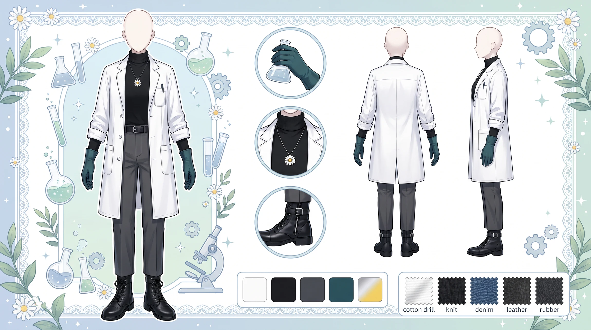
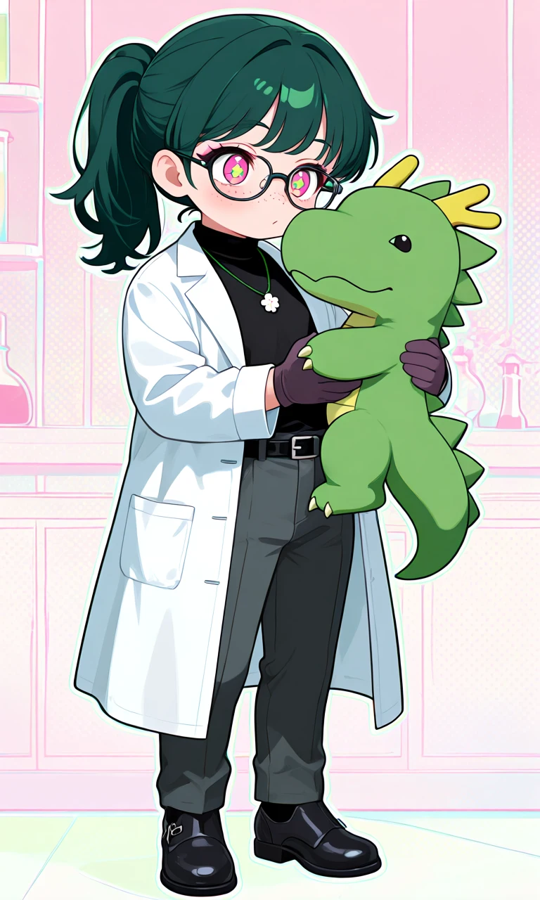
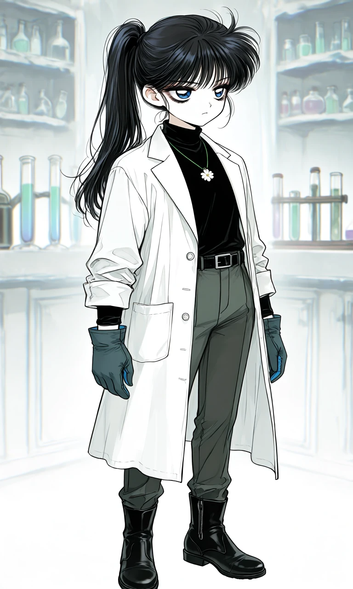

The Daisy Hypothesis

Outfit Prompt
Practical laboratory assistant outfit, modest scientific workwear, subtle gothic laboratory fashion, functional and comfortable clothing, black, white, and muted gray color palette.
A clean white laboratory coat with a straight, practical silhouette, reaching mid-thigh, featuring a classic notched collar, long sleeves, buttoned front, and two large lower utility pockets. The coat is neatly fitted without excessive decoration, designed for comfortable movement during laboratory work.
Underneath the coat is a simple black high-neck blouse with a modest neckline, smooth fabric, fitted shoulders, and long sleeves.
Dark charcoal-gray tailored trousers with a comfortable straight-leg silhouette, a fitted waistband, and practical side pockets.
A narrow black leather belt with a simple silver buckle.
Dark protective laboratory gloves with a snug fit and flexible material.
A delicate white flower pendant necklace suspended from a thin green chain, adding a small feminine accent to the otherwise practical outfit.
Simple black leather ankle boots with rounded toes, low sturdy heels, and minimal decoration.
Understated scientific assistant aesthetic, practical laboratory workwear, neat and functional clothing, subtle gothic influence, clean tailored silhouette, comfortable professional styling.
Outfit Examples



